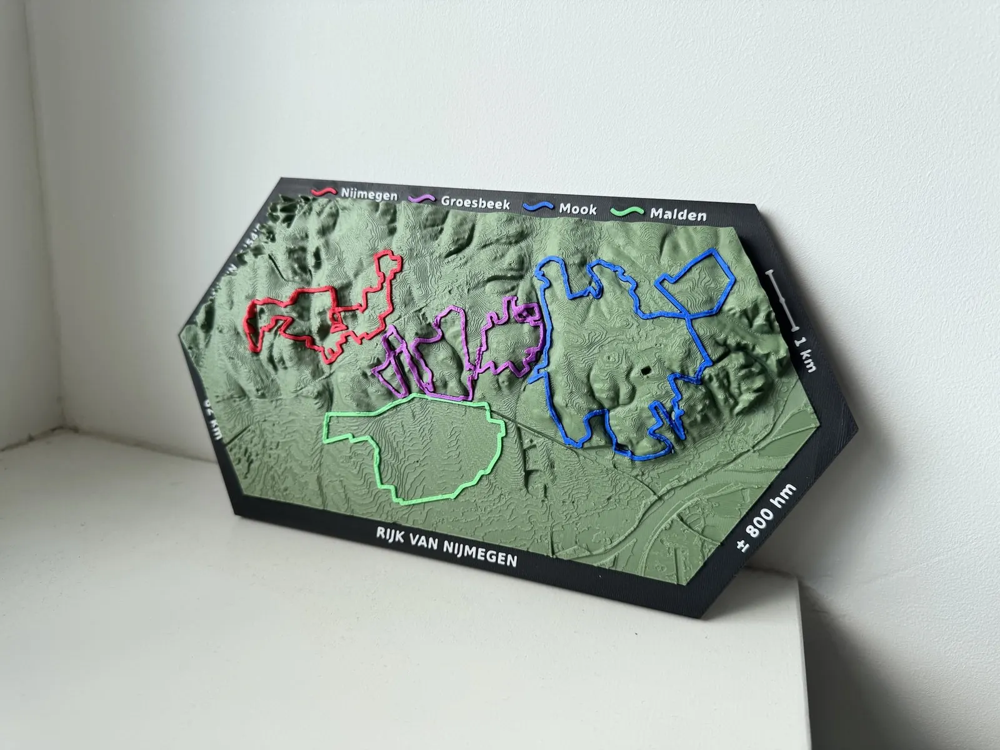

Wij maken van je fiets-, gravel- of MTB-route een tastbaar landschap. Met de echte hoogtemeters, elke bocht en die ene klim die je nooit meer vergeet.

Kies een route uit de collectie, of upload je eigen GPX-bestand in het bestelformulier.
We koppelen je route aan echte hoogtedata en maken er een 3D-model van. Je krijgt een voorbeeld te zien voordat we printen.
Je route wordt in duizenden dunne laagjes opgebouwd, met de route in een opvallende kleur. Klaar om te geven, of om zelf te bewonderen.
Elke kaart wordt op bestelling voor je gemaakt. Een route uit de collectie wordt binnen 3 tot 5 werkdagen na je bestelling verzonden. Een kaart van je eigen rit wordt binnen 4 tot 8 werkdagen verzonden nadat je het voorbeeld hebt goedgekeurd. De bezorging zelf gebeurt door de vervoerder en komt daar nog bij; je krijgt een track-and-tracecode zodat je je pakket kunt volgen. Je hoort altijd binnen 24 uur van ons.
MTB-gebieden en routes op één plaat, zoals Rijk van Nijmegen en de Geile Strecke, kosten €45. De grote Divide-kaarten (Green, Brown en Dutch Divide) kosten €55. De extra brede kaarten, de Utrechtse Heuvelrug en de TransBelgian (47 cm), kosten €65. Voor je eigen rit krijg je vooraf een prijs. Alle prijzen zijn exclusief verzendkosten.
Ja. Upload je GPX-bestand in het bestelformulier (exporteren kan in bijvoorbeeld Strava, Komoot of Garmin Connect). Binnen 24 uur nemen we contact met je op. We koppelen je rit aan echte hoogtedata en sturen je eerst een voorbeeld voordat we printen. Na je akkoord op het voorbeeld wordt je kaart binnen 4 tot 8 werkdagen verzonden.
Bij gravelroutes hoort een los ritkaartje dat in de kaart valt, met jouw datum en totale rijtijd. Hierboven bij de uitgelichte route zie je meteen hoe het eruitziet.
Elke kaart wordt pas geprint als jij hem bestelt. Zo krijg je altijd een vers, speciaal voor jou gemaakt exemplaar, en liggen er geen kaarten te verstoffen die niemand wil hebben (dat scheelt ook een hoop materiaal). Van routes die nog niet eerder besteld zijn, laten we daarom een 3D-render zien. Die is rechtstreeks gemaakt van het printbestand, dus wat je ziet is precies wat je krijgt. Zodra een kaart voor het eerst geprint is, komen er echte foto's bij. Bestel je een kaart die nog alleen als render te zien is, dan versturen we hem gratis.
Ja. Aan de achterkant zitten sleutelgaten, dus je hangt hem met een of twee schroeven aan de muur. Neerzetten op een vensterbank of plank kan natuurlijk ook.
We denken graag mee. Elke route heeft een standaard kleurenschema, maar een andere routekleur of een ander landschap is vaak mogelijk.